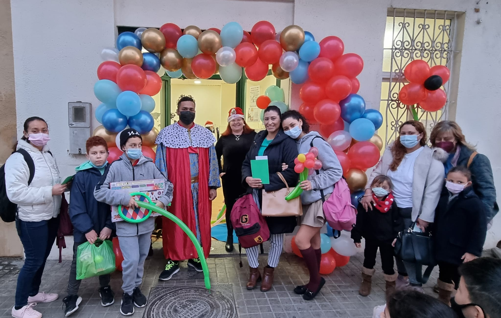

PRIMERA ACOGIDA
Facilitamos el acceso a las personas inmigrantes a recursos sociales.
orientamos a las personas inmigrantes en gestiones de primera acogida.
Más Información
ASESORAMIENTO JURIDICO
Asesoramiento general en materia de extranjeria como: asilo, refugio, arraigo, reagrupacion,expulsion, nacimiento,conflictos laborales, etc.
Más Información
FORMACION PARA LA
INTEGRACION
SOCIAL Y EL TRABAJO
Te ayudamos a desarrollar competencias sociales basicas para convivir en su entorno.
Te informaremos sobre tus derechos y obligaciones como persona inmigrante.
Más Información
SENSIBILIZACIÓN
Charlas a inmigrantes sobre derechos y deberes.
Participacion en acciones de incidencia politica.
Más Información
VOLUNTARIADO
Formacion de voluntariado para la integracion social entre locales e inmigrantes.
Captacion de donantes de ropa, muebles, libros y enseres.
Más Información
TRABAJO EN
RED Y CONVENIOS
Trabajo en red con el ayuntamiento de Torrent, consulados y extranjeria.
Convenios con la Universidad de valencia, laura vicuña, fundacion diagrama y Novaterra
Más Información
DONAM LA MA
Somos una organización no gubernamental, laica, apolítica y no lucrativa creada por
personas inmigrantes y locales, trabajamos en la provincia de valencia, como personas
comprometidas socialmente iniciamos actividades en la línea de cooperación
internacional al desarrollo acompañando proyectos en Paraguay y Colombia a partir
del año 2015.
En el año 2017 nos constituimos legalmente como asociación de atención a inmigrantes
con sede en valencia ciudad.
En el año 2019, después de observar el crecimiento de la población inmigrante en torrent
y pueblos aledaños de la horta sud, (más del 12% de la población empadronada es
inmigrante) y la inexistencia de asociaciones de inmigrantes, hemos abierto la oficina de
atención en esta ciudad, brindando asistencia a inmigrantes provenientes de
Latinoamérica, áfrica y Asia.
Nuestros principios estan enfocados en la promoción y protección basada en los DDHH son nuestros ejes rectores fundamentales y principios rectores de la atención para asegurar la igualdad de derechos económicos, sociales, educativos y políticos, y luchar para eliminar el odio racial y la discriminación

Formate Con Nosotros
VALENCIANO
Curso presencial con una duracion de 20 horas con certificado, donde aprenderas las nociones basicas del idioma.
Certificado valido y obligatorio para pedir arraigo social.
Horario
GERIATRIA
Curso presencial con una duracion de x horas con certificado, aprenderas las nociones del cuidado de las personas mayores de edad, y como brindar un cuidado responsable, respetuoso y solidario.
LIMPIEZA
Curso presencial con una duracion de x horas con certificado, curso enfocado en la practicidad donde aprenderas el uso adecuado de las herramientas y el adecuado uso de sustancias.
MANIPULACION DE
ALIMENTOS
Curso presencial con una duracion de x horas con certificado, aprenderas sobre la adecuada manipulacion de alimentos, cuales son los principales cuidados a tener y sus posible consecuencias por la mala manipulacion.
PREVENCION DE RIESGOS
LABORALES
Curso presencial con una duracion de x horas con certificado, donde aprenderas los principales factores de riesgo en el trabajo y como evitar estos posibles riesgos.
Este curso es fundamental para trabajos que tienen un riesgo alto como por ejemplo la obra.
CAMARERO/MESA Y BAR
Curso presencial con una duracion de x horas con certificado, curso enfocado en la buena atencion al cliente, comunicacion y manipulacion de alimentos.